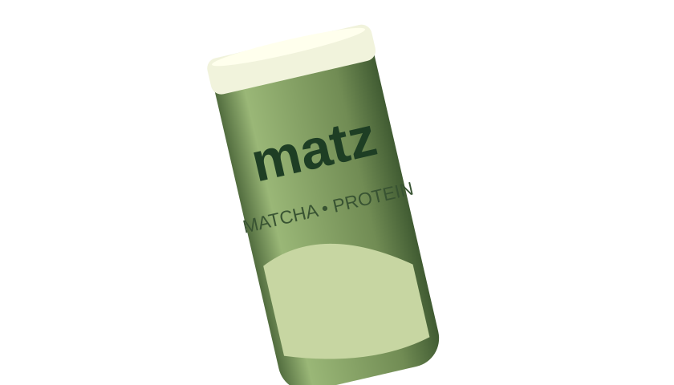
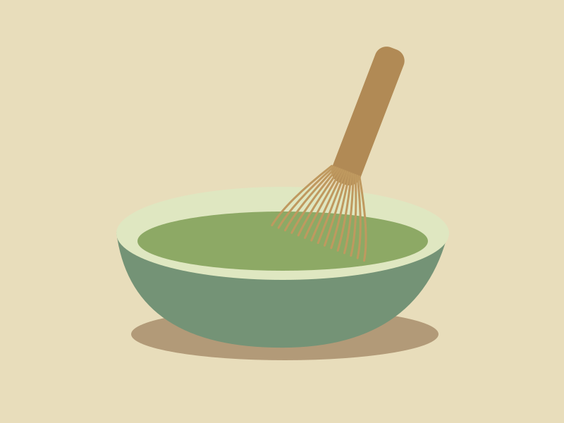
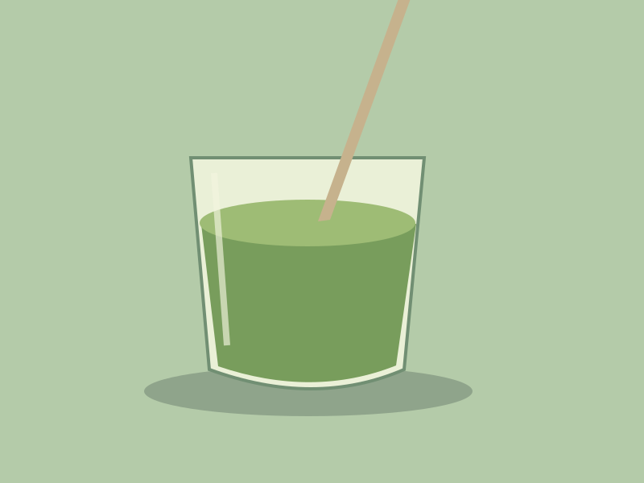

کلاسیک
ماچای سرد با طعمی ملایم
انتخاب ↗چای سبز سرد با بافت خامهای و عطر ماچا، برای صبحهای شلوغ و عصرهای طولانی.



با یک سؤال شروع کردیم؛ اگر ماچا را به یک نوشیدنی خنک روزمره تبدیل کنیم، چه طعمی پیدا میکند؟
 انتخاب این طرح
انتخاب این طرح